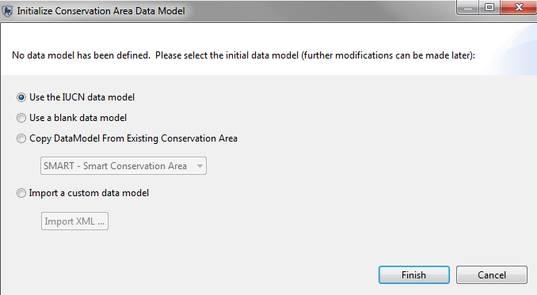

Upon initial installation of the SMART software, you will need to set up a new Conservation Area which involves a number of configuration components.
Creating a new Conservation Area is done through the Advanced... link on the initial start up screen.
Initial Start Screen
SMART Advanced Options

The Conservation Area Properties are names and descriptors assigned to a specific Conservation Area. These properties can help users of the SMART software manage multiple conservation areas.

Creating an account for the primary administrator of a newly created Conservation Area is required, and the fields will need to be populated before the software will advance. After completing the form, the primary administrator’s account will be created and can be used to make any changes within the newly defined Conservation Area.
Administrative User

ID: The existing identifier of the Conservation Area employee. If no identifier exists, the system will generate one if left unedited.
Given Name(s): The given name of the employee
Family Name(s): The family name of the employee
Conservation Area Start: The start date of employment for the employee
Birth Date: The birth date of the employee
Gender: The gender of the employee
Smart User Name: The log-in or username used to access the SMART software
Smart Password: The password for the username
Re-Type Password: A confirmation of the account's password
Upon initialization of a new Conservation Area, the primary administrator will need to define the data model to be used for the new Conservation Area.

This process can be accomplished by:
After a data model has been established it is then possible to customize the data model to suit the needs of a particular Conservation Area.
For further information see Customizing Data Models
Employees working within a Conservation Area, and SMART users, may belong to a particular agency, and may have a rank within that agency. Ranks are associated to agencies and have to be created as an entry under a specific agency.
As part of the initial setup of a Conservation Area, the list of Agencies and their associated Ranks is accessed through the menu “Conservation Area - Agency and Rank List …”

Add Agency: Adds new agencies
Delete Agency: Deletes selected agencies
Add Rank: Creates new ranks as part of the selected agency
Delete Rank: Deletes selected ranks
After initialization of a new Conservation Area, the Employee List contains the single administrator account that was created during the initialization of the Conservation Area. Additional employees of a Conservation Area can be entered individually, or through a bulk upload process.

Enter search terms: text filter to shortlist entries
Import: Brings up an interface for importing a CSV to allow for bulk loading of employees.

Sample CSV (employees.csv)
Edit: Brings up interface for updating information about the selected employee

ID: The existing identifier of the Conservation Area employee. If no identifier exists, the system will generate one if this field is left unedited.
Given Name(s): The given name of the employee
Family Name(s): The family name of the employee
Conservation Area Start: The start date of employment for the employee
Inactive: If toggled, indicates the employee is no longer employed by the Conservation Area
Employment End: If the Inactive box is checked, the employment end date will become editable and allow for the recording of an employment end date
Birth Date: The birth date of the employee
Gender: The gender of the employee
Agency: Agency of the employee
Rank: Rank of the employee
Smart User Name: The log-in or username used to access the SMART software
Smart Password: The password for the username
Re-Type Password: A confirmation of the account's password
Smart User Level: The SMART User Level is updated using this pull down.
Create New: Brings up interface for updating information about the selected employee

ID: The existing identifier of the Conservation Area employee. If no identifier exists, the system will generate one if this field is left unedited.
Given Name(s): The given name of the employee
Family Name(s): The family name of the employee
Conservation Area Start: The start date of employment for the employee
Birth Date: The birth date of the employee
Gender: The gender of the employee
Agency: Agency of the employee
Rank: Rank of the employee
Smart User Name: The log-in or username used to access the SMART software
Smart Password: The password for the username
Re-Type Password: A confirmation of the account's password
User Levels Permissions and Restrictions
SMART accounts have varying access permissions allowing Administrators to assign an appropriate user level to employees. The SMART design is dynamic and user accounts can be updated to accommodate changes in employees' job duties.
Data Entry
The data entry user level has the most restrictions in place. The menu bar and icons available have been customized to include only the features required for the account to enter patrol data.
The data entry user level can create, export, and import patrol data; and can create system backups after patrol information has been completed.

Analyst
The analyst user level is designed for employees to create, export, import, and run queries and reports. The analyst user level cannot create, alter or delete any queries or reports that have been saved in the Conservation Area Queries or Conservation Area Reports. The analyst user level can run, create, alter or delete reports saved in the My Queries or My Reports folders. An analyst account cannot enter patrol data or export/import patrols.

Manager
The manager account can make full changes to the patrol, query, report or planning modules. A manager account cannot make changes to the data model, nor update Conservation Area nor patrol parameters.
Administrator
The administrator account has full access to all functions and options in SMART.
After initalization of a new Conservation Area, a list of stations is required.
Name: The name of the station
Description: A detailed description of the station
Note: The language is set before entering in the name and description of the station.

SMART supports multiple coordinate system projections and the Administrator can select and set default projections. This process is not a requirement during the initialization of the Conservation Area.
Add: Adds projections to the Conservation Area
Delete: Deletes projections from the Conservation Area
Edit: Allows for custom parameter edits to the selected projection
Set Default: Sets the selected projection as default for the Conservation Area

As part of the initialization process the new Conservation Area will require boundary files to be loaded. Not every Conservation Area will have boundary files for all 5 types and not all 5 are required.
ESRI Shapefiles are the default format for loading into SMART.
Load: Opens a window where the Administrator will select the ESRI Shapefile.
Clear: Clears or deletes the chosen Shapefile from the Conservation Area.
Change Labels: Allows the Administrator to select a different field that will be used for display and labelling.
Note: A projection file (.prj) is required by SMART and if not present during the loading of the Shapefile, the application will reject the Shapefile.

Basemaps are essentially saved cartographic display parameters and are created in the Mapping Perspective window. The Administrator can set a default basemap for the Conservation Area or delete basemaps from this window. This process is not a requirement during the initialization of the Conservation Area.
Set As Default: Sets the selected basemap as the default for the entire Conservation Area
Delete: Deletes the selected basemap.